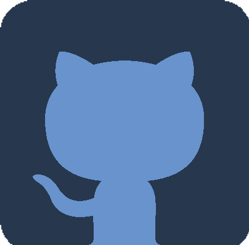

Hey ! I'm Yanis Annasri
Gameplay / Versatile Developper
My projects
From an early age, I’ve been captivated by the potential of technology to
create, connect, and inspire. What began as a
simple curiosity evolved into a deep interest in understanding how things work behind the scenes. During
my teenage
years, I discovered programming and quickly became immersed in learning various languages and tools on
my own. Over
time, I found joy in bringing ideas to life through code — whether building interactive applications,
designing
intuitive interfaces, or exploring new technologies. This passion continues to drive me in my career as
a developer,
where I aim to craft engaging and meaningful digital experiences.
Here are some of the projects I've made during my formation:

Hungry Snake

Sea Miner

Fragments Of The Past

Industrial Warfare
My Skills

Unity
During my time at school, I
had the pleasure to learn
Unity, a game engine accessible to everyone.
Unreal Engine 5
Passionate about
continuous learning, I strive
to
explore and exploit all facets of Unreal Engine 5 to deliver exceptional gaming experiences.

C#
Coding adventures with C# in
Unity have not only sharpened my
skills but also fueled my passion for game development.

C++
Through my C++ projects, I
learned to solve complex problems
and optimize application performance

GitHub
Learning version
control was a pivotal step in my
development journey, and GitHub played a crucial role in streamlining project
collaboration.

SFML
From the early days of my
coding adventure, SFML stood as
the cornerstone of my game development education.